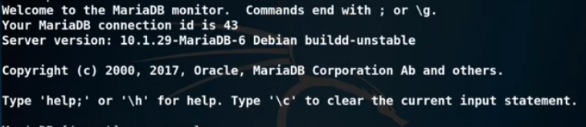
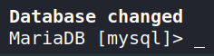
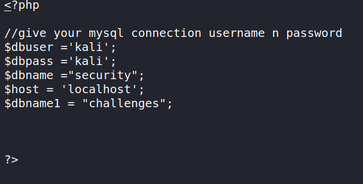
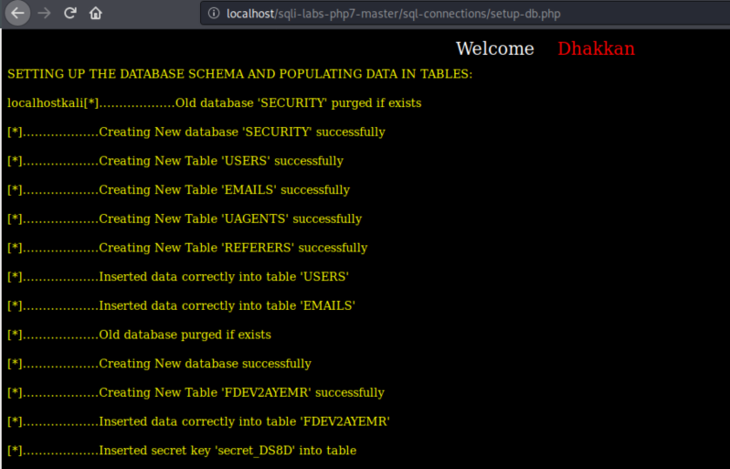
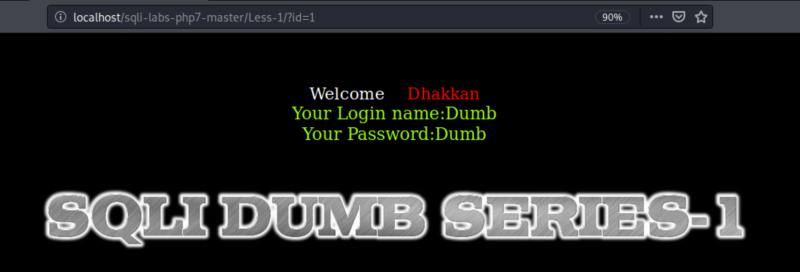

Intalling and configuring
We're executing this exercises on Kali Linux 2020. As Kali Linux comes with php 7 there are shome differences with php 5. Here you have a guide to install “sqli-labs” on this distribution.
a) Install Apache if you don't have it.
b) Download the zip file from https://github.com/kairosart/sqli-labs-php7
c) Uncompress it.
$ unzip sqli-labs-php7-master.zip
d) Go to “Downloads” directory and copy it to “/var/www/htm”.
$ sudo cp -r sqli-labs-php7-master /var/www/html
e) Start “mysl” server.
$ sudo service mysql start
f) Start “mysql”.
Default password: toor
$ mysql -u root -o
Output:

d) Select “mysql” database.
MariaDB [(none)]> use mysql;
Output:

e) Let's create a new user with all privileges.
User: kali
Password: kali
MariaDB [(none)]> GRANT ALL PRIVILEGES ON *.* TO 'kali'@'localhost' IDENTIFIED BY 'kali';
f) Restart “mysql” service.
$ sudo service mysql restart
g) Configure Sqli-labs credentials.
$ cd /var/www/html/sqli-labs-php7-master/sql-connections$
$ sudo nano db-creds.inc
$ sudo nano db-creds.inc
Change:
$dbuser ='kali';
$dbpass ='kali';

f) Restart “mysel” and “apache” servers.
$ sudo service mysql restart
$ sudo service apache2 restart
$ sudo service apache2 restart
g) Open a browser and go to http://localhost/sqli-labs-php7-master/.
h) Click on Setup/reset Database for labs.

i) Modify the way sqli-labs logs are saved.
$ cd /etc/mysql/mariadb.conf.d$
/etc/mysql/mariadb.conf.d$ sudo nano 50-server.cnf
/etc/mysql/mariadb.conf.d$ sudo nano 50-server.cnf
Uncomment these two lines:
general_log_file = /var/log/mysql/mysql.log
general_log = 1
j) Restart “mysel” server.
$ sudo service mysql restart
k) Let's chech out everything goes right.
Go to http://localhost/sqli-labs-php7-master/#fm_imagemap.
Click on Lesoon 1.
Add to the url “?id=1” http://localhost/sqli-labs-php7-master/Less-1/?id=1
